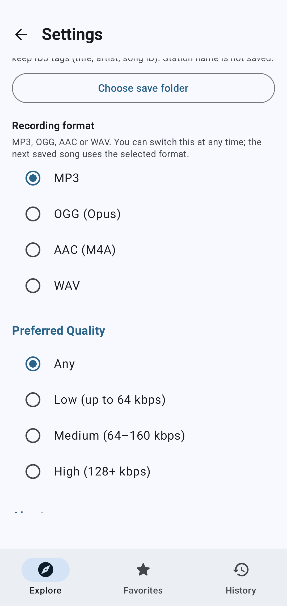
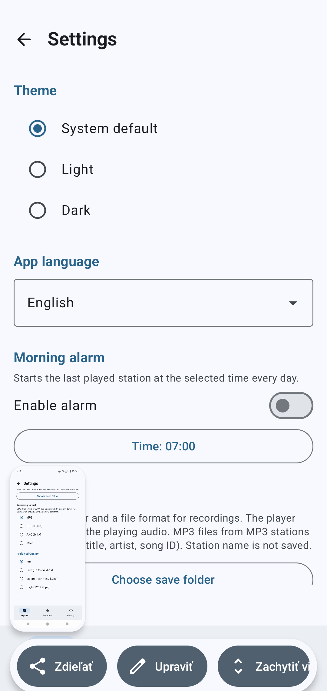
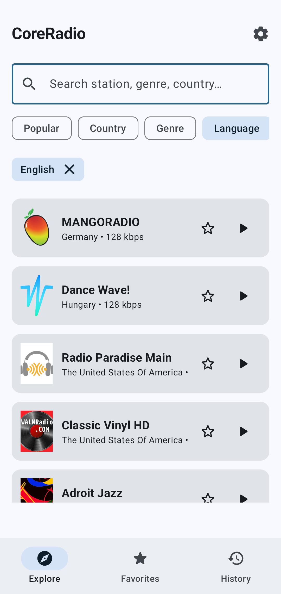
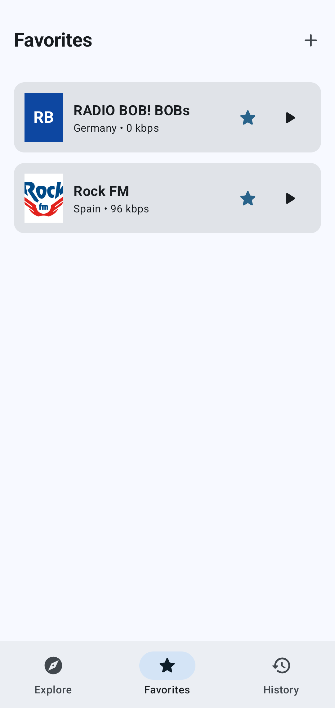
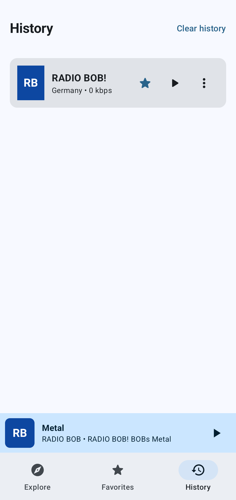

Core
Radio from the whole world. In your phone.





Night. A car. Local radio plays an ad. Another. Then a hit from last winter.
Country. Genre. Language. A station from a city you have never been to. Play.
The music keeps going when you lock the screen. A song you do not want to lose: record the whole track. Morning is not a beep. It is the last station.
Favourites. Your own station if it is missing. A sleep timer. The last station waits. It will not start itself.
This is not a streaming service with its own catalogue. It does not put your music in the cloud.